청소년상담사-3급(2교시) (2017-09-16 기출문제)
1과목: 학습이론
1. 이론적 관점과 주요 관심사의 연결이 옳지 않은 것은?
- 행동주의 - 자극과 반응의 연합
- 인지주의 - 지각, 문제 해결, 추론의 발달
- 사회학습이론 - 관찰을 통한 학습
- 사회인지이론 - 사회구조와 인지발달의 관계
- 인지신경과학 - 뇌의 구조 및 활동과 학습과정의 관련성
(정답률: 46%)

2. 학습동기 중 호기심과 탐색 행동에 관한 설명으로 옳지 않은 것은?
- 화이트(R. White)는 탐색행동의 근원이 환경을 다루고 싶어하는 내적 욕구에 있다고 하였다.
- 얼(R. Earl)은 아동이 이미 적응된 자극보다 약간 덜 복잡한 자극을 탐색하려는 동기가 있다고 하였다.
- 유기체는 새로운 것이나 신기한 것과 상호작용하고 싶어하며 그 과정에서 학습한다.
- 진화론적 관점에서 볼 때 동물은 자신의 생존을 보장받기 위하여 탐색을 한다.
- 벌린(D. Berlyne)은 탐색과 놀이행동에 깔려 있는 기본 기제를 각성 수준이라고 하였다.
(정답률: 60%)
3. 진화론적 관점으로 옳지 않은 것은?
- 종 특유의 차이가 학습에 영향을 미친다.
- 동일한 종 내에서 자연적인 변이성이 발생한다.
- 학습된 행동 특성은 모두 유전된다.
- 유기체 속성과 환경적 요구의 상호작용으로 자연선택이 이루어진다.
- 자연선택을 통해 적응이 이루어진다.
(정답률: 87%)
4. 학자와 그 주장의 연결이 옳은 것을 모두 고른 것은?
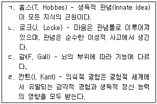
- ㄱ
- ㄴ
- ㄱ, ㄷ
- ㄴ, ㄹ
- ㄷ, ㄹ
(정답률: 41%)
5. 학습에 있어 기능주의에 관한 설명으로 옳지 않은 것은?
- 다윈(C. Darwin)의 진화론에서 영향을 받았다.
- 유기체의 신체적 적응 기능만을 강조하였다.
- 유기체의 정신과정과 행동이 유기체가 환경에 적응하도록 도와준다.
- 제임스(W. James)는 개인이 자신의 환경에 적응하도록 돕는 것이 의식의 목적이라고 하였다.
- 듀이(J. Dewey)는 심리학적 실험의 결과가 교육과 일상의 삶에 활용될 수 있어야 한다고 주장하였다.
(정답률: 78%)
6. 학생의 학습에 대한 교사의 기대에 관한 설명으로 옳은 것을 모두 고른 것은?
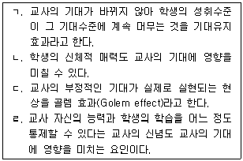
- ㄱ, ㄴ
- ㄴ, ㄷ
- ㄷ, ㄹ
- ㄱ, ㄴ, ㄹ
- ㄱ, ㄴ, ㄷ, ㄹ
(정답률: 69%)
7. 외재적 보상의 효과에 관한 인지평가이론의 설명으로 옳지 않은 것은?
- 수행수준에 관계없이 과제 수행 자체에 대해 보상을 주는 경우 내재적 동기는 손상되지 않으며 오히려 증가한다.
- 보상을 받는 사람에게 자기결정성에 대한 정보를 제공할 수 있다.
- 보상을 통제로 받아들이면 내재적 동기를 감소시킬 가능성이 커진다.
- 보상을 정보로 받아들이면 유능감에 변화가 생기기 시작한다.
- 보상이 실제 행동 또는 발전과 연관될 때 개인에게 자신의 기술 또는 능력에 대한 정보를 줄 수 있다.
(정답률: 63%)
8. 동기에 관한 자기결정성 이론이 가정하는 욕구가 아닌 것은?
- 유능(competence)
- 자율성(autonomy)
- 관계(relatedness)
- 환경과의 관계에서 자기결정적이고자 하는 욕구
- 외적 보상에 기반한 수행 욕구
(정답률: 67%)
9. 행동주의 학습이론의 기본 가정에 관한 설명으로 옳지 않은 것은?
- 특정 대상에 대해 특정 정서를 갖는 것은 학습으로 간주할 수 없다.
- 동물 연구에서 나온 학습 원리를 인간 학습에 적용할 수 있다.
- 새로운 행동의 형성ㆍ유지ㆍ제거는 환경과의 상호작용에 의해 결정된다.
- 정상행동 뿐만 아니라 이상행동도 동일한 학습원리로 설명할 수 있다.
- 직접 관찰할 수 있거나 측정 가능한 행동에 초점을 둔다.
(정답률: 69%)
10. 다음에 해당하는 개념은?
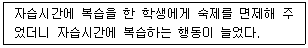
- 정적 강화
- 부적 강화
- 차별 강화
- 행동 연쇄
- 자기 강화
(정답률: 80%)
11. 행동주의 학습 개념과 사례의 연결이 옳지 않은 것은?
- 홍수법(flooding): 뱀 공포 치료를 원하는 내담자에게 뱀을 몸에 감고 1시간 이상을 버티게 했다.
- 조형(shaping): 옹아리를 시작한 아기에게 '엄마'라는 말을 가르치기 위해 '음음'→'음마'→'엄마' 단계로 강화하였다.
- 혐오치료(aversion therapy): 알코올 중독 치료를 원하는 내담자에게 구토제를 복용하도록 하여 술을 마실 때마다 구토를 경험하게 하였다.
- 자발적 회복(spontaneous recovery): 등교거부가 심한 학생에게 교문, 현관, 복도, 교실 순으로 조금씩 시간을 보내면서 자연스럽게 학교에 익숙해지도록 하였다.
- 소거(extinction): 우는 행동을 줄이기 위해 울 때마다 주었던 관심과 도움을 더 이상 주지 않았다.
(정답률: 82%)
12. 강화에 관한 설명으로 옳은 것을 모두 고른 것은?
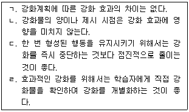
- ㄱ, ㄴ
- ㄴ, ㄷ
- ㄷ, ㄹ
- ㄱ, ㄴ, ㄹ
- ㄱ, ㄴ, ㄷ, ㄹ
(정답률: 87%)
13. 행동 수정에 관한 설명으로 옳은 것을 모두 고른 것은?
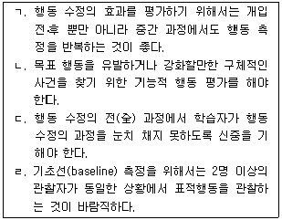
- ㄱ, ㄴ
- ㄴ, ㄷ
- ㄷ, ㄹ
- ㄱ, ㄴ, ㄹ
- ㄱ, ㄴ, ㄷ, ㄹ
(정답률: 66%)
14. 일차(primary) 강화물에 해당하는 것을 모두 고른 것은?
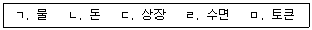
- ㄱ, ㄹ
- ㄴ, ㄷ
- ㄷ, ㅁ
- ㄱ, ㄴ, ㄹ
- ㄴ, ㄷ, ㅁ
(정답률: 80%)
15. 욕구위계이론에서 매슬로우(A. Maslow)가 주장한 내용으로 옳지 않은 것은?
- 다양한 욕구 사이에 위계가 존재한다.
- 자아실현의 욕구는 욕구위계 중 가장 높은 단계에 해당한다.
- 아래 단계의 욕구가 어느 정도 충족된 후에 위 단계의 욕구가 나타나는 것이 일반적이다.
- 사랑과 소속의 욕구, 자존의 욕구, 자아실현의 욕구는 성장 욕구에 속한다.
- 안전의 욕구는 사랑과 소속의 욕구 아래 단계에 위치한다.
(정답률: 79%)
16. 귀인이론에 관한 설명으로 옳지 않은 것은?
- 성공 상황에서 노력 요인으로 귀인할 경우 학습 행동을 동기화 할 수 있다.
- 귀인 성향은 과거 성공, 실패 상황에서의 반복적인 원인 탐색 경험에 의해 형성된다.
- 귀인의 결과에 따라 자부심, 죄책감, 수치심 등의 정서가 유발되기도 한다.
- 와이너(B. Weiner)는 인과 소재, 안정성, 통제성 등의 차원으로 귀인 유형을 구분하였다.
- 능력 귀인은 내적, 안정적, 통제 가능한 귀인 유형으로 분류된다.
(정답률: 75%)
17. 암묵기억(implicit memory)에 관한 설명으로 옳지 않은 것은?
- 습관은 암묵기억이 아니다.
- 절차기억은 암묵기억이다.
- 비선언적 기억(nondeclarative memory)이라고도 한다.
- 자전거를 타는 것은 암묵기억이다.
- 말로 표현되는 것이 아니다.
(정답률: 80%)
18. 망각에 관한 설명으로 옳은 것은?
- 언어정보는 언어기억만 방해한다.
- 망각은 인출실패를 포함한다.
- 간섭(interference)이론보다는 쇠퇴(decay)이론에 의해 더 잘 설명된다.
- 망각의 유일한 원인은 부호화(encoding)실패이다.
- 역행간섭보다는 순행간섭이 망각에 더 큰 역할을 한다.
(정답률: 63%)
19. 인지과정에 관한 설명으로 옳은 것을 모두 고른 것은?
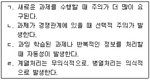
- ㄱ, ㄴ
- ㄷ, ㄹ
- ㄱ, ㄴ, ㄷ
- ㄴ, ㄷ, ㄹ
- ㄱ, ㄴ, ㄷ, ㄹ
(정답률: 64%)
20. 해마에 관한 설명으로 옳지 않은 것은?
- 외현기억에 중요한 기능을 한다.
- 장기기억은 응고화되면 해마보다는 대뇌피질에 의존한다.
- 공간기억에 중요한 역할을 한다.
- 손상되면 학습이 불가능하다.
- 손상되면 부신호르몬 분비가 증가한다.
(정답률: 74%)
21. 장기상승작용(long-term potentiation)에 관한 설명으로 옳은 것을 모두 고른 것은?
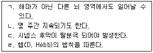
- ㄱ, ㄴ
- ㄴ, ㄷ
- ㄱ, ㄷ, ㄹ
- ㄴ, ㄷ, ㄹ
- ㄱ, ㄴ, ㄷ, ㄹ
(정답률: 55%)
22. 뇌 쾌락중추에 강화물로 직접적인 전기 자극을 주는 것에 관한 설명으로 옳은 것은?
- 훈련 이전의 박탈은 필요 없다.
- 포만 상태가 발생한다.
- 인간에게만 작용한다.
- 급격히 소거되지 않는다.
- 대부분의 강화 계획(schedule)에 작용한다.
(정답률: 42%)
23. 반두라(A. Bandura)의 관찰학습 과정 중 파지과정(retentional process)에서 발생하지 않는 것은?
- 인지적 조직화
- 인지적 시연
- 행위의 관찰
- 상징적 부호화
- 시연의 활성
(정답률: 64%)
24. 메타인지에 관한 설명으로 옳지 않은 것은?
- 학습과 기억을 증진시키기 위해 자신의 학습과 인지 과정을 조절하는 것이다.
- 메타인지가 활성화되면 학습방해가 일어나지 않는다.
- 자신의 현재 지식수준을 점검하는 것은 메타인지 기술이다.
- 집중이 잘 되는 장소를 찾는 것은 메타인지 기술이다.
- 자신이 읽은 내용에 대해 질문하는 것은 메타인지 기술이다.
(정답률: 69%)
25. 사회인지이론에서 자기조절(self-regulation)에 관한 설명으로 옳은 것을 모두 고른 것은?
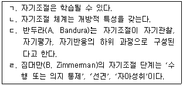
- ㄱ, ㄴ
- ㄴ, ㄹ
- ㄱ, ㄴ, ㄷ
- ㄴ, ㄷ, ㄹ
- ㄱ, ㄴ, ㄷ, ㄹ
(정답률: 56%)
2과목: 청소년 이해론
26. 청소년기의 일반적인 발달 특징으로 옳은 것은?
- 정서표현이 아동기보다 더 직접적이고 일시적이다.
- 사춘기는 남아가 여아보다 더 빨리 시작된다.
- 청소년 초기보다 후기에 성역할 고정관념이 강화된다.
- 에스트로겐은 여아의 사춘기 발달에 중요하다.
- 동조행동에 대한 또래집단의 압력은 약화된다.
(정답률: 50%)
27. 학교 밖 청소년 지원에 관한 법률상 '학교 밖 청소년'에 해당되지 않는 것은?
- 중학교에서 2개월 동안 무단결석한 청소년
- 중학교에서 질병으로 6개월째 취학을 유예한 청소년
- 중학교 졸업 후 고등학교에 진학하지 않은 청소년
- 고등학교에서 제적 처분된 청소년
- 고등학교를 자퇴한 청소년
(정답률: 52%)
28. 다음에서 설명하는 문화이론의 관점은?
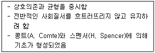
- 문화기능주의적 관점
- 문화진화론적 관점
- 문화갈등론적 관점
- 문화상대주의적 관점
- 문화관념론적 관점
(정답률: 49%)
29. 설리반(H. Sullivan)이 주장한 대인관계 발달이론의 내용으로 옳지 않은 것은?
- 아동기에는 부모의 관심을 얻으려는 욕구가 강하다.
- 편안하고 성공적인 대인관계가 인생에서 가장 중요하다.
- 전(前)청소년기에는 단짝친구관계를 형성하려는 욕구가 강하다.
- 인간은 자신 속에 없는 것도 타인에게서 발견할 수 있다.
- 청소년 초기에는 이성관계를 형성하려는 욕구가 강하다.
(정답률: 17%)
30. 청소년 관련법에서 규정하고 있는 청소년 연령이 바르게 연결된 것을 모두 고른 것은?
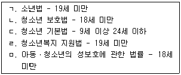
- ㄱ, ㄴ
- ㄱ, ㄷ
- ㄱ, ㄹ
- ㄴ, ㄷ, ㅁ
- ㄴ, ㄷ, ㄹ, ㅁ
(정답률: 45%)
31. 소년법상 소년에 대한 보호처분 결정으로 옳은 것을 모두 고른 것은?
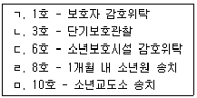
- ㄱ, ㄴ
- ㄱ, ㄷ, ㄹ
- ㄴ, ㄷ, ㄹ
- ㄱ, ㄴ, ㄷ, ㄹ
- ㄱ, ㄷ, ㄹ, ㅁ
(정답률: 17%)
32. 지역사회 청소년통합지원체계와 연계 가능한 기관을 모두 고른 것은?
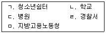
- ㄱ, ㄷ
- ㄴ, ㄷ, ㄹ
- ㄱ, ㄴ, ㄷ, ㄹ
- ㄱ, ㄴ, ㄹ, ㅁ
- ㄱ, ㄴ, ㄷ, ㄹ, ㅁ
(정답률: 38%)
33. 일반적으로 청소년기에 발달하는 타인에 대한 인상형성(impression formation)의 특징으로 옳지 않은 것은?
- 점점 더 조직화된다.
- 점진적으로 분화된다.
- 보다 더 추상적이 된다.
- 추론을 더 많이 사용한다.
- 점점 더 자기중심적이 된다.
(정답률: 50%)
34. 친구, 이웃, 학교 등 사회와의 결속이 약한 사람이 비행을 쉽게 저지른다는 비행이론은?
- 사회유대이론
- 차별접촉이론
- 사회학습이론
- 아노미이론
- 낙인이론
(정답률: 57%)
35. 유엔아동권리협약의 기본원칙에 포함되지 않는 것은?
- 차별금지의 원칙
- 권한제한의 원칙
- 아동의사 존중의 원칙
- 아동이익 최우선의 원칙
- 생명ㆍ생존ㆍ발달 존중의 원칙
(정답률: 49%)
36. 프로이드(S. Freud)의 방어기제에 관한 설명으로 옳은 것을 모두 고른 것은?
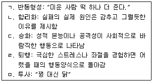
- ㄱ, ㄴ
- ㄷ, ㄹ
- ㄱ, ㄴ, ㄷ
- ㄱ, ㄴ, ㄷ, ㄹ
- ㄱ, ㄴ, ㄷ, ㄹ, ㅁ
(정답률: 57%)
37. 청소년비행 중 지위비행에 해당하는 것은?
- 절도
- 주거침입
- 음주
- 폭행
- 친구 협박
(정답률: 59%)
38. 시간이 경과함에 따라 물질문화와 정신문화 간의 간격이 점점 더 벌어지는 현상은?
- 문화접변
- 문화전계
- 문화결핍
- 문화이식
- 문화지체
(정답률: 37%)
39. 셀만(R. Selman)의 역할수용능력 발달단계 중 제3자적 역할수용단계에 관한 설명으로 옳은 것을 모두 고른 것은?
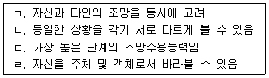
- ㄱ, ㄴ
- ㄷ, ㄹ
- ㄱ, ㄴ, ㄷ
- ㄱ, ㄴ, ㄹ
- ㄴ, ㄷ, ㄹ
(정답률: 55%)
40. 청소년쉼터에 관한 설명으로 옳지 않은 것은?(문제 오류로 실제 시험에서는 1, 4번이 정답처리 되었습니다. 여기서는 1번을 누르면 정답 처리 됩니다.)
- 일시쉼터는 가출청소년을 24시간 이내 일시 보호하는 곳이다.
- 일시쉼터는 조기발견과 초기개입을 목적으로 한다.
- 단기쉼터는 가출청소년을 3개월 내외 보호하는 곳으로 가정 및 사회복귀를 목적으로 한다.
- 중장기쉼터는 가정복귀가 어려운 가출청소년을 1년 이내로 보호하는 곳이다.
- 중장기쉼터는 가출청소년의 자립지원을 목적으로 한다.
(정답률: 53%)
41. 바움린드(D. Baumrind)의 부모 유형에 관한 설명으로 옳지 않은 것은?
- 권위있는(authoritative) 부모는 자녀의 독립심을 격려한다.
- 권위있는(authoritative) 부모는 훈육 시 논리적으로 설명한다.
- 권위주의적(authoritarian) 부모는 애정적, 반응적이고 자녀와 항상 대화를 갖는다.
- 허용적(indulgent) 부모는 일관성 없는 훈육을 한다.
- 허용적(indulgent) 부모는 자녀에 대한 통제가 거의 없다.
(정답률: 69%)
42. 자신의 흥미와 욕구를 만족시키기 위해 규범을 준수하는 사람이 있다면, 이는 콜버그(L. Kohlberg)의 도덕성발달 단계 중 어느 단계에 해당되는가?
- 법과 질서 지향
- 도구적 상대주의 지향
- 착한 아이 지향
- 벌과 복종 지향
- 사회계약 지향
(정답률: 50%)
43. 긴즈버그(E. Ginzberg)의 직업선택 발달이론 중 현실기(realistic period)에 관한 설명으로 옳은 것은?
- 아동기에 경험한다.
- 시험기(tentative period) 다음에 경험한다.
- 주로 자신의 기호와 흥미에 기초한 선택을 한다.
- 현실적 고려 없이 자신의 직업을 선택한다.
- 눈에 잡히는 특성만으로 세상을 이해한다.
(정답률: 37%)
44. 학교폭력예방 및 대책에 관한 법률상 학교폭력에 관한 설명으로 옳지 않은 것은?
- 신체ㆍ언어ㆍ성ㆍ사이버 폭력, 따돌림, 금품갈취 등이 포함된다.
- 학교 내외에서 학생을 대상으로 발생한 폭력이다.
- 학교폭력 관련 사항을 심의하는 교내 기구는 학교폭력대책자치위원회이다.
- 학교장은 학생, 교직원 및 학부모 대상 학교폭력 예방교육을 학기별 1회 이상 실시해야 한다.
- 학교폭력대책자치위원회는 피해학생 보호 조치로 학교장에게 피해학생의 전학을 요청할 수 있다.
(정답률: 63%)
45. 청소년 흡연예방과 관련된 정부 부처별 정책이 바르게 연결된 것은?
- 교육부 - 건강증진법 제정ㆍ운영
- 보건복지부 - 담배사업법 제정ㆍ운영
- 여성가족부 - 청소년보호종합대책 추진
- 문화체육관광부 - 인터넷상의 청소년 유해약물 유통 규제
- 경찰청 - 흡연관련 영상물 등급 분류 소위원회 운영
(정답률: 46%)
46. 다음에 해당되는 학자는?
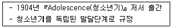
- 홀(S. Hall)
- 프로이드(S. Freud)
- 에릭슨(E. Erikson)
- 반두라(A. Bandura)
- 피아제(J. Piaget)
(정답률: 45%)
47. 다문화가족의 청소년 지원을 위한 이주배경청소년지원센터 설치ㆍ운영을 규정하고 있는 법은?
- 다문화가족지원법
- 청소년 기본법
- 청소년 보호법
- 청소년활동 진흥법
- 청소년복지 지원법
(정답률: 38%)
48. 청소년복지 지원법상 일정기간 지원을 받았는데도 가정ㆍ학교ㆍ사회로 복귀하여 생활할 수 없는 청소년에게 자립하여 생활할 수 있는 능력과 여건을 갖추도록 지원하는 시설은?
- 청소년쉼터
- 청소년회복지원시설
- 청소년자립지원관
- 청소년치료재활센터
- 청소년특화시설
(정답률: 62%)
49. 다음 현상은 마르샤(J. Marcia)의 자아정체감 상태 중 어디에 해당하는가?
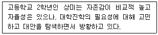
- 정체감 유예
- 정체감 분리
- 정체감 성취
- 정체감 혼미
- 정체감 유실
(정답률: 50%)
50. 다음이 설명하는 청소년 참여기구는?
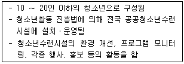
- 청소년의회
- 청소년특별회의
- 청소년운영위원회
- 청소년참여위원회
- 청소년지역사회위원회
(정답률: 40%)
3과목: 청소년 수련 활동론
51. 청소년활동 진흥법상 청소년활동시설이 아닌 것은?
- 청소년특화시설
- 청소년회복지원시설
- 유스호스텔
- 평생교육시설
- 과학관
(정답률: 14%)
52. 인증수련활동의 최대 유효기간은 인증 받은 날로부터 몇 년 이내인가?
- 1년
- 3년
- 4년
- 6년
- 7년
(정답률: 23%)
53. 청소년 기본법령상 1급 청소년지도사가 반드시 배치되어야 하는 경우는?
- 청소년회원 수가 2,000명 이하인 청소년단체
- 수용정원이 500명 이하인 청소년수련원
- 수용정원이 500명 이하인 청소년수련관
- 숙박정원이 500명 이하인 유스호스텔
- 수용정원이 500명 이하인 청소년문화의집
(정답률: 20%)
54. 청소년참여정책의 성과와 특징에 관한 설명으로 옳지 않은 것은?
- 청소년특별회의는 2년마다 정책과제를 발굴ㆍ건의한다.
- 청소년특별회의는 청소년정책과제의 설정ㆍ추진ㆍ점검을 위해 청소년전문가와 청소년이 함께 참여한다.
- 2012년 여성가족부는 청소년참여 정책공로로 UN공공행정상을 수상하였다.
- 청소년참여위원회는 중앙부처와 지방자치단체에 청소년활동, 정책 등을 건의ㆍ시행함을 목적으로 한다.
- 청소년운영위원회는 공공청소년수련시설에서 청소년의 욕구와 의견을 반영하고자 설치ㆍ운영되고 있다.
(정답률: 27%)
55. 칙센트미하이(M. Csikszentmihalyi)의 몰입경험 이론에서 활동과제의 수준이 자신의 수행능력보다 낮을 때 나타나는 것은?
- 불안(anxiety)
- 몰입(flow)
- 걱정(worry)
- 지루함(boredom)
- 각성(arousal)
(정답률: 33%)
56. 청소년활동 진흥법상 시설붕괴 우려로 안전 확보가 현저히 미흡한 경우 시장ㆍ군수ㆍ구청장이 청소년수련활동 주최자에게 시설운영 또는 활동의 중지를 명할 수 있는 최대 기간은?
- 3개월
- 4개월
- 5개월
- 6개월
- 1년
(정답률: 23%)
57. 집단중심의 청소년활동 지도방법에 해당하는 것을 모두 고른 것은?
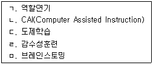
- ㄱ, ㄴ, ㄷ
- ㄱ, ㄷ, ㄹ
- ㄱ, ㄹ, ㅁ
- ㄴ, ㄹ, ㅁ
- ㄱ, ㄴ, ㄹ, ㅁ
(정답률: 17%)
58. 청소년활동 진흥법상 청소년수련활동인증프로그램의 신청 시 작성해야 할 내용으로 옳은 것을 모두 고른 것은?
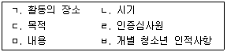
- ㄱ, ㄴ, ㄹ
- ㄴ, ㄷ, ㅁ
- ㄱ, ㄴ, ㄷ, ㅁ
- ㄴ, ㄷ, ㅁ, ㅂ
- ㄷ, ㄹ, ㅁ, ㅂ
(정답률: 30%)
59. 청소년활동 진흥법상 숙박형 청소년수련활동에 해당되는 것을 모두 고른 것은?
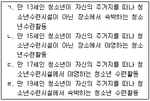
- ㄱ, ㄴ
- ㄱ, ㄴ, ㄷ
- ㄱ, ㄷ, ㄹ
- ㄴ, ㄷ, ㄹ
- ㄱ, ㄴ, ㄷ, ㄹ
(정답률: 25%)
60. 2015 개정 교육과정에서 제시하고 있는 창의적 체험활동의 4대 영역 중 다음이 설명하고 있는 것은?
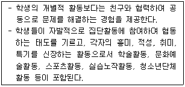
- 자치활동
- 적응활동
- 진로활동
- 행사활동
- 동아리활동
(정답률: 33%)
61. 청소년 자기도전포상제에 참여할 수 있는 청소년의 연령은?
- 만 9세 ∼ 만 13세
- 만 10세 ∼ 만 14세
- 만 11세 ∼ 만 15세
- 만 12세 ∼ 만 16세
- 만 13세 ∼ 만 17세
(정답률: 23%)
62. 규범적 요구(normative needs)에 관한 설명으로 옳지 않은 것은?
- 객관적인 차원에서 진단된 요구이다.
- 인증기준에 의해 결정되는 요구도 포함된다.
- 성취기준에 의해 결정된 요구도 포함된다.
- 학습자 개인이 주관적으로 인지한 요구를 말한다.
- 자격기준에 의해 결정된 요구도 포함된다.
(정답률: 18%)
63. 청소년활동 진흥법령상 다음의 입지조건을 갖추어야 하는 수련시설은?
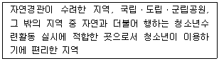
- 청소년수련관, 청소년문화의집
- 청소년수련관, 청소년야영장
- 청소년수련원, 청소년문화의집
- 청소년수련원, 청소년야영장
- 청소년야영장, 청소년특화시설
(정답률: 10%)
64. 청소년활동 진흥법령상 인증심사원이 되려는 사람은 인증위원회가 실시하는 직무연수를 최소 몇 시간 이상 받아야 하는가?
- 20시간
- 25시간
- 30시간
- 35시간
- 40시간
(정답률: 20%)
65. 청소년프로그램개발 패러다임 중 실증주의(positivism)에 관한 설명으로 옳지 않은 것은?
- 청소년은 선행지식과 경험이 없는 빈 그릇 상태로 간주된다.
- 목표에 의해 내용이 결정되는 특성이 강하다.
- 청소년지도자는 청소년에게 교육내용을 효과적으로 전달하는 사람으로 간주된다.
- 외부세계에 존재하는 지식과 정보를 청소년에게 전달하는 도구적이고 공학적인 성격이 강하다.
- 교육을 의식화 과정으로 간주하고, 억압상태로부터의 해방과 비판적 실천행위(praxis)를 강조한다.
(정답률: 19%)
66. 청소년활동 프로그램의 최종 종결단계에서 이루어지는 일반적인 지도전략으로 옳지 않은 것은?
- 활동의 성과를 평가하고, 그 결과에 대하여 포상한다.
- 참여결과가 일상생활에 적용될 수 있도록 지도한다.
- 활동목표 달성을 위한 세부 단위활동을 안내한다.
- 활동의 성과를 다른 참가자와 교환하고 통합하는 기회를 갖도록 지도한다.
- 활동의 결과로 청소년 자신에게 나타난 변화를 인식하도록 도와준다.
(정답률: 26%)
67. ( )에 들어갈 내용으로 옳은 것은?
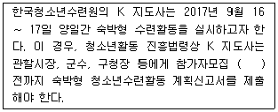
- 3일
- 5일
- 7일
- 10일
- 14일
(정답률: 16%)
68. 프로그램개발 통합모형에서 프로그램 기획단계에 수행되어야 할 내용으로 옳지 않은 것은?
- 청소년의 요구 분석
- 프로그램 아이디어 창출
- 프로그램 개발의 타당성 분석
- 프로그램 평가보고서 작성
- 프로그램 개발의 기본방향 설정
(정답률: 24%)
69. 청소년방과후아카데미의 5대 프로그램 영역으로 옳지 않은 것은?
- 자립자활
- 학습지원
- 자기개발
- 전문체험
- 생활지원
(정답률: 24%)
70. 청소년활동 진흥법령상 ( )에 들어갈 내용으로 옳은 것은?
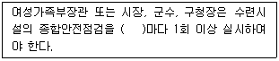
- 1년
- 2년
- 3년
- 4년
- 5년
(정답률: 24%)
71. 청소년활동 진흥법상 청소년문화활동의 정의이다. ( )에 들어갈 각 활동으로 옳은 것은?
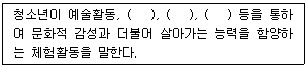
- 동아리활동, 봉사활동, 수련활동
- 동아리활동, 봉사활동, 교류활동
- 스포츠활동, 봉사활동, 교류활동
- 스포츠활동, 동아리활동, 봉사활동
- 스포츠활동, 동아리활동, 교류활동
(정답률: 22%)
72. 다음이 설명하고 있는 것은?
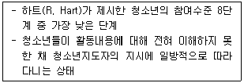
- 장식(decoration) 단계
- 조작(manipulation) 단계
- 명목주의(tokenism) 단계
- 성인주도(adult initiated) 단계
- 제한적 위임과 정보제공(assigned but informed) 단계
(정답률: 20%)
73. 콜브(D. Kolb)의 경험학습 4단계 중 다음에 해당되는 것은?
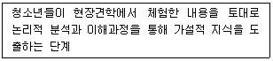
- 적극적 실험(active experimentation)
- 반성적 관찰(reflective observation)
- 추상적 개념화(abstract conceptualization)
- 구체적 경험(concrete experience)
- 비판적 사고(critical thinking)
(정답률: 29%)
74. 청소년 기본법상 시ㆍ도 및 시ㆍ군ㆍ구 청소년육성 전담기구에 둘 수 있는 것은?
- 청소년보호위원회
- 청소년정책위원회
- 청소년정책실무위원회
- 청소년육성 전담공무원
- 청소년수련활동인증위원회
(정답률: 25%)
75. 청소년활동의 지도원리로 옳지 않은 것은?
- 청소년중심의 원리
- 획일적 지도의 원리
- 상호학습의 원리
- 동기유발 및 유지의 원리
- 전인성의 원리
(정답률: 22%)